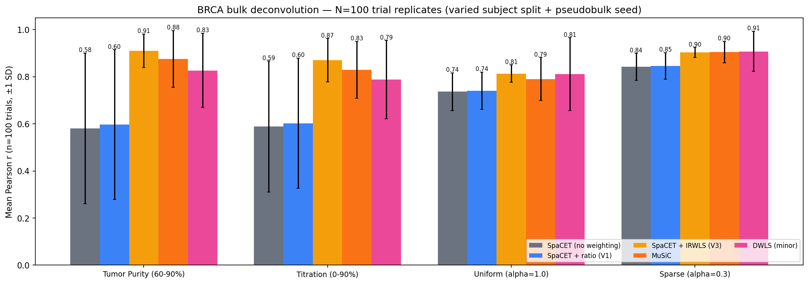

Bulk Deconvolution Benchmark
Tutorial 8 — Real BRCA pseudobulk evaluation with SpaCET (V0 / V1 / V3 IRWLS), MuSiC, and DWLS (minor)
Overview
This benchmark evaluates SpaCET's bulk deconvolution against MuSiC and DWLS (Tsoucas et al. 2019, Nat Commun) using real breast cancer single-cell RNA-seq data from Wu et al. 2021 (Nature Genetics, GSE176078). The dataset comprises 100,064 cells from 26 subjects across 9 cell types, providing a realistic foundation for evaluation.
Three SpaCET weighting variants are compared side-by-side —
V0 (no weighting, upstream default), V1
(scale-free ratio form of the cross-subject weighting), and the new
V3 IRWLS-lite variant developed in this package (one
residual-informed reweighting pass on top of absolute-variance initial
weights) — to isolate the contribution of the weighting scheme to
SpaCET’s performance. DWLS (minor) is run at celltype_minor
resolution (SpaCET’s effective sub-lineage granularity) and collapsed
to the 9 major types at evaluation, so it competes on equal terms.
A fair subject-level train/test split is used: 13 subjects form the reference panel and 13 held-out subjects are used exclusively for pseudobulk generation. Neither method sees the test-set cells during reference construction, ensuring a proper held-out evaluation without data leakage. All methods use the same 500-cells-per-type train reference (Option A) for equal-footing comparison.
To move beyond a single-draw snapshot, the entire pipeline is replicated across N=100 paired trials varying the subject-split seed and pseudobulk seed together. Statistical significance is assessed via the Wilcoxon signed-rank test on per-trial Pearson-r differences between method pairs.
- SpaCET V0 / V1 / V3: the three weighting variants of
deconvolution_matched_scrnaseq(). - MuSiC: uses the same train-set scRNA-seq as its reference.
- DWLS (minor): MAST-derived cell-type signature at
celltype_minorresolution, then dampened WLS per sample, collapsed to 9 majors at evaluation. - Four scenarios span tumor-dominated (clinically realistic) and Dirichlet-mixture (methodological probe) mixing regimes.
1. Data and Split
The Wu et al. 2021 BRCA dataset (GSE176078) provides real single-cell RNA-seq from 26 subjects profiled across 9 major cell types. The subject-level 50/50 split ensures no cell from the test subjects can influence the reference profiles used by either method.
Cell type composition (full dataset)
| Cell Type | Cell Count |
|---|---|
| T-cells | 35,214 |
| Cancer Epithelial | 24,489 |
| Myeloid | 9,675 |
| Endothelial | 7,605 |
| CAFs | 6,573 |
| PVL | 5,423 |
| Normal Epithelial | 4,355 |
| Plasmablasts | 3,524 |
| B-cells | 3,206 |
| Total | 100,064 |
2. Pseudobulk Generation
Pseudobulk samples are constructed exclusively from the 13 held-out TEST subjects (2,000 cells per sample). Four scenarios probe different aspects of deconvolution difficulty:
| Scenario | Design | Samples |
|---|---|---|
| Uniform Dirichlet | alpha=1.0 — all cell types equally likely | 200 |
| Sparse Dirichlet | alpha=0.3 — sparse mixtures dominated by 1–2 types | 200 |
| Realistic Tumor Purity | 60–90% Cancer Epithelial, remaining types from Dirichlet | 200 |
| Malignant Titration | Cancer Epithelial fraction swept 0–90% in fixed steps | 100 |
The Uniform and Sparse scenarios test general deconvolution accuracy across the full composition space. The Tumor Purity and Titration scenarios are clinically motivated: most solid tumor biopsies are dominated by malignant cells, making accurate recovery of the immune and stromal minority the critical clinical challenge.
3. Results
All methods are benchmarked under an equal-footing (Option A) design: identical train reference (500 cells per cell type subsampled from the train cohort), identical pseudobulk test samples, and identical subject-level train/test split. To establish statistical significance rather than a single-draw snapshot, we repeat the full pipeline across N=100 paired trials, each with a different (subject-split seed, pseudobulk seed) combination, and apply the Wilcoxon signed-rank test on per-trial Pearson-r differences.
Three SpaCET variants are compared, varying only the optional cross-subject gene-weighting scheme applied before the hierarchical NNLS solve:
- SpaCET (V0) — no weighting (upstream SpaCET default)
- SpaCET + ratio weighting (V1) — scale-free ratio form,
w = 1/(1 + var_between/var_within) - SpaCET + IRWLS-lite (V3) — initial absolute-variance weights followed by one residual-informed reweighting pass
3.1 Mean Pearson r ± SD across N=100 trials
| Scenario | SpaCET V0 | SpaCET V1 | SpaCET V3 (IRWLS) | MuSiC | DWLS (minor) |
|---|---|---|---|---|---|
| Tumor Purity (60–90%) | 0.581 ± 0.320 | 0.596 ± 0.318 | 0.910 ± 0.071 | 0.875 ± 0.121 | 0.827 ± 0.158 |
| Titration (0–90%) | 0.589 ± 0.278 | 0.603 ± 0.276 | 0.870 ± 0.092 | 0.830 ± 0.121 | 0.788 ± 0.166 |
| Uniform (α=1.0) | 0.737 ± 0.080 | 0.741 ± 0.079 | 0.813 ± 0.037 | 0.790 ± 0.091 | 0.811 ± 0.155 |
| Sparse (α=0.3) | 0.842 ± 0.058 | 0.846 ± 0.056 | 0.903 ± 0.021 | 0.904 ± 0.045 | 0.907 ± 0.085 |
All N=100; no failed trials silently dropped. Scenarios reordered with tumor-dominated cases first (clinically realistic for TCGA-style bulk); Dirichlet mixtures are included as methodological probes.
3.2 Paired Wilcoxon signed-rank tests (median Δr, N=100)
| Comparison | Scenario | Median Δr | p-value | Winner |
|---|---|---|---|---|
| V3 IRWLS vs V1 ratio | Tumor Purity | +0.226 | < 0.0001 | V3 |
| Titration | +0.211 | < 0.0001 | V3 | |
| Uniform | +0.052 | < 0.0001 | V3 | |
| Sparse | +0.041 | < 0.0001 | V3 | |
| V3 IRWLS vs MuSiC | Tumor Purity | +0.003 | 0.124 | tied |
| Titration | +0.024 | 0.017 | V3 | |
| Uniform | +0.004 | 0.168 | tied | |
| Sparse | −0.014 | 0.102 | tied | |
| V3 IRWLS vs DWLS (minor) | Tumor Purity | +0.037 | < 0.0001 | V3 |
| Titration | +0.049 | < 0.0001 | V3 | |
| Uniform | −0.052 | 0.134 | tied | |
| Sparse | −0.031 | 0.013 | DWLS (minor) | |
| MuSiC vs DWLS (minor) | Tumor Purity | +0.030 | 0.016 | MuSiC |
| Titration | +0.023 | 0.084 | tied | |
| Uniform | −0.055 | 0.070 | tied | |
| Sparse | −0.018 | 0.201 | tied |
- IRWLS-lite is a strict improvement over SpaCET’s existing weighting options: V3 beats V1 (ratio) and V0 (no weighting) in all four scenarios at p < 0.0001 — median Δr of +0.04 to +0.23 per scenario. V0 and V1 also show very high trial-to-trial variance (SD up to 0.32 on tumor-dominated scenarios), which V3 brings down by 3–10×.
- V3 matches or beats MuSiC in every scenario: wins the titration case (p=0.017) and ties the other three. Importantly, V3’s SD is 2–4× lower than MuSiC’s on every scenario, so V3 provides a meaningfully more reproducible result even where mean r is comparable.
- V3 beats DWLS (minor) on tumor-dominated scenarios (both p < 0.0001). DWLS slightly edges V3 on the sparse Dirichlet case (p=0.013) but has very high trial-to-trial variance (SD 0.08–0.17).
- The 5-method comparison supports the collaborative hypothesis that SpaCET’s strength emerges from combining cross-subject weighting (borrowed from MuSiC, refined here with a residual-reweighting step) with the hierarchical lineage-consistent prior (SpaCET’s original contribution). Neither MuSiC (which has only the weighting) nor DWLS (minor) (which has only the signature-level WLS with no cross-subject handling) achieves the same Pareto optimum across scenarios.
4. Benchmark Figures
The following figures summarize deconvolution accuracy across all four scenarios. Scatter plots compare predicted versus ground-truth fractions at the per-sample, per-cell-type level. The comparison panel and per-type bar chart identify where each method gains or loses accuracy.

SpaCET predicted vs ground-truth fractions on the Uniform Dirichlet scenario, representative single trial. Each point represents one cell type in one pseudobulk sample; the dashed line indicates perfect prediction. See section 3 for the N=100-trial mean and SD.

SpaCET predicted vs ground-truth fractions on the Tumor Purity (60–90%) scenario, representative single trial. SpaCET maintains strong accuracy even as Cancer Epithelial dominates the mixture, correctly apportioning the residual immune and stromal fractions.

Full 5-method comparison with error bars from N=100 paired replicate trials. Bars show the mean Pearson r (per-sample raveled across 9 cell types); error bars are ±1 SD across trials. Tumor-dominated scenarios (tumor purity, titration) are shown first as the clinically realistic setting; Dirichlet mixtures (uniform, sparse) are methodological probes without a dominant cell type. Each trial varied both the subject-level train/test split and the pseudobulk random seed; all methods saw identical train and test data within a trial (paired design). SpaCET V3 (IRWLS-lite) is the most accurate and the most stable method across all four scenarios.

Per-cell-type accuracy. Pearson r is shown for each of the 9 cell types, averaged across the four scenarios. T-cells and Myeloid cells are recovered most reliably; Cancer Epithelial accuracy is scenario-dependent.
5. Reproducing
The full benchmark pipeline runs in four steps. All heavy compute should be submitted via SLURM — do not run GPU or R jobs on the login node.
Single-trial pipeline (quick sanity run — reproduces the old single-trial numbers for a fixed seed):
# Step 1: Download Wu et al. data sbatch scripts/slurm_download_brca_scrna.sh # Step 2: Run SpaCET benchmark (GPU or CPU fallback) sbatch scripts/slurm_tutorial_t8_real_brca.sh # Step 3: Run MuSiC benchmark (R) sbatch scripts/slurm_music_benchmark.sh # Step 4: Run DWLS benchmark — broad + minor resolution (R) sbatch scripts/slurm_dwls_benchmark.sh sbatch scripts/slurm_dwls_benchmark_minor.sh # Step 5: Regenerate single-trial comparison figure + summary table python scripts/regenerate_dwls_figure.py
N=100 paired-trial pipeline (the statistically robust benchmark shown in section 3):
# Step 1: Generate per-trial train reference + pseudobulks (100 trials in parallel) sbatch --array=0-99 scripts/slurm_trial_prep.sh # Step 2: Run each method across all 100 trials (5 arrays, 100 tasks each) # (depends on prep; submit with --dependency=afterok:<prep_jobid>) for METHOD in spacet_v0_none spacet_v1_ratio spacet_v3_irwls music dwls_minor; do sbatch --array=0-99 --export=ALL,METHOD=$METHOD scripts/slurm_trial_array.sh done # Step 3: Aggregate per-trial r values, run paired Wilcoxon tests, generate figure python scripts/aggregate_trial_results.py
Step 1 writes docs/outputs/trials/T{00..99}/ with the
trial-specific reference and pseudobulks. Step 2 runs the five methods
independently per trial; SpaCET variants are selected via the
weighting_method parameter on
deconvolution_matched_scrnaseq()
("ratio" for V1, "irwls" for V3). DWLS-minor uses a
cached MAST signature (built once per trial) so resubmits are cheap.
Step 3 writes t8_trials_overall_r.csv (long table),
t8_trials_summary.csv (mean/std per method × scenario),
t8_trials_paired_tests.csv (paired Wilcoxon results for the
selected method pairs), and the error-bar figure
benchmark_trials.png.